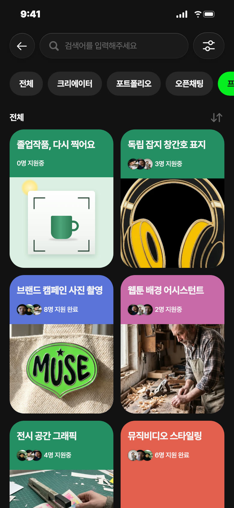
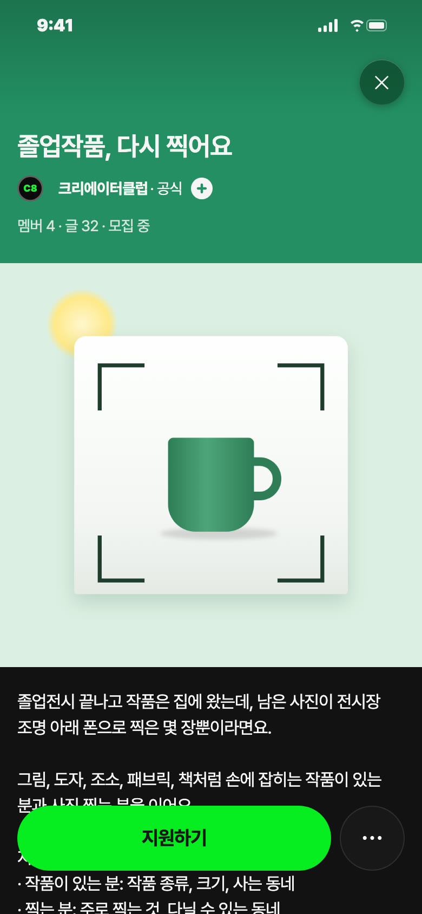
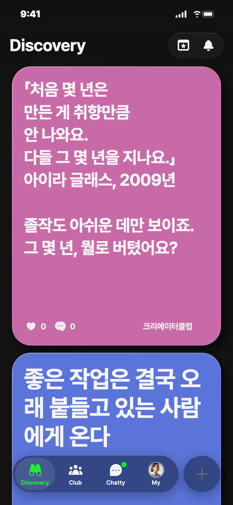
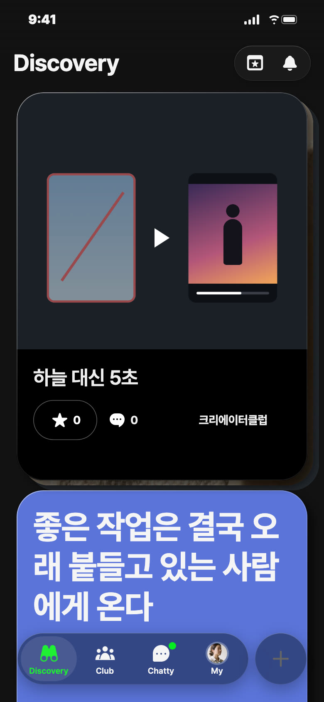
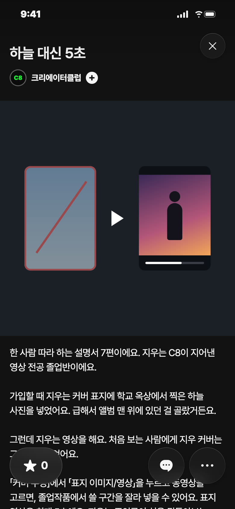

C8 앱 게시 시안 · 11/18(수) — 오늘 추천: 프로젝트 · 회원끼리 실제로 같이 하는 판
오늘 추천 · 프로젝트 · 초록


칸: 서로 돕기 × 판 열기 (지난 7일 빈 칸)
왜 오늘: 수요일 1순위, 11월 졸업전시 철 — 전시 끝난 작품이 집에 오는 때예요
보낼 사람: 조소과 친구에게 「너 졸작 사진 여기서 다시 찍어」
받고 싶은 지원 채팅: 「도자 해요. 컵 열두 점이고 성수 쪽이에요. 흰 바탕으로 찍고 싶어요」
제목
졸업작품, 다시 찍어요
카테고리
서로 돕기
모집 내용
작품 있는 분·찍는 분 · 11/30까지 지원 · 12/20까지 촬영 · 상품 없음
설명
졸업전시 끝나고 작품은 집에 왔는데, 남은 사진이 전시장 조명 아래 폰으로 찍은 몇 장뿐이라면요. 그림, 도자, 조소, 패브릭, 책처럼 손에 잡히는 작품이 있는 분과 사진 찍는 분을 이어요. 지원서에는 둘 중 하나를 적어 주세요. · 작품이 있는 분: 작품 종류, 크기, 사는 동네 · 찍는 분: 주로 찍는 것, 다닐 수 있는 동네 C8 운영자가 보고 수락해요. 수락되면 게시판에 「작품 · 동네 · 되는 날」이나 「찍는 것 · 동네 · 되는 날」을 한 줄씩 올려요. 서로 보고 채팅방에서 말을 걸어, 둘이 날짜와 장소를 정해요. 처음 보는 사이면 낮에, 학교나 작업실처럼 사람 있는 곳에서 만나요. 정한 날은 일정에 올려 둬요. 찍은 사진은 작가가 자기 포트폴리오에 올리고, 설명에 찍은 사람을 @로 남겨요. 찍은 사람도 같은 사진을 자기 포트폴리오에 올려요. 사례가 오갈지는 만나기 전에 둘이 채팅에서 정해요. 지원은 11월 30일(월)까지, 촬영은 12월 20일(일)까지예요. 상품은 없어요. 전시장에서 본 사람보다, 포트폴리오에서 처음 볼 사람이 더 많을 거예요.
비축 · 영감 · 목 11/19 낮 12시 후보 · 분홍

칸: 창작자 말 그대로 × 질문
왜 비축: 목요일 1순위 자리 후보
보낼 사람: 졸작 보면 한숨 쉬는 동기에게 「이거 봐, 다 그렇대」
받고 싶은 댓글: 「한 달에 하나씩 마감 정해 놓고 그냥 냈어요. 열 개쯤 되니까 덜 부끄러웠어요」
영감 글
「처음 몇 년은 만든 게 취향만큼 안 나와요. 다들 그 몇 년을 지나요.」 아이라 글래스, 2009년 졸작도 아쉬운 데만 보이죠. 그 몇 년, 뭘로 버텼어요?
비축 · 포트폴리오


칸: 앱 소개 × 일 받기
왜 비축: 설명서 연재 7편 후보 — 3~6편 다음 자리
보낼 사람: 영상 하면서 커버엔 셀카 둔 동기에게 「너 커버에 영상 넣을 수 있어」
제목
하늘 대신 5초
설명
한 사람 따라 하는 설명서 7편이에요. 지우는 C8이 지어낸 영상 전공 졸업반이에요. 가입할 때 지우는 커버 표지에 학교 옥상에서 찍은 하늘 사진을 넣었어요. 급해서 앨범 맨 위에 있던 걸 골랐거든요. 그런데 지우는 영상을 해요. 처음 보는 사람에게 지우 커버는 그냥 하늘이었어요. 「커버 수정」에서 「표지 이미지/영상」을 누르고 동영상을 고르면, 졸업작품에서 쓸 구간을 잘라 넣을 수 있어요. 표지 영상은 최대 5초예요. 지우는 주인공이 처음 뒤돌아보는 5초를 골랐어요. 이제 지우 커버엔 하늘 대신 지우가 찍은 장면이 돌아가요. #설명서 #커버